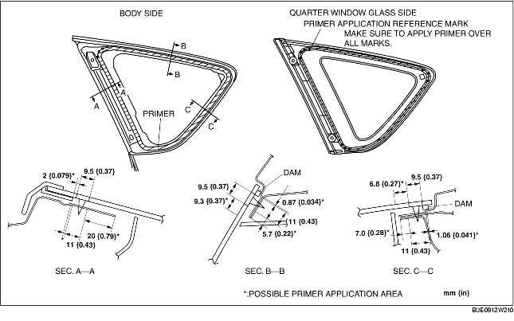

1. Cut away the old sealant using a razor so that 1-2 mm {0.04-0.07 in} thickness of sealant remains along the perimeter of the frame.
2. If the sealant has come off completely in any one place, apply some primer after degreasing, and allow it approx. 30 min to dry. Then apply 2 mm {0.08 in} thickness of new sealant.
3. Clean and degrease an approx. 50 mm {2.0 in} wide strip along the perimeter of the glass and the bonding area on the body.
4. Install the dam along the perimeter of the glass.
5. Use only glass primer on the quarter window glass, and body primer on the body, then allow it to dry for approx. 30 min.

6. Apply sealant to the area of the glass surface as shown in the figure.
7. Insert the positioning pins and fastener to the body and install the quarter window glass.
8. Press the areas where the pins are located on the quarter window glass to allow the pin tabs to be engaged with the body.
9. Install the following parts:
10. Allow the sealant to harden completely.